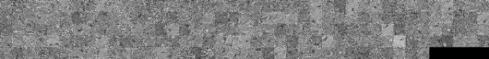

Développement de modèles autoencodeurs à composantes continues
Description du projet
Les modèles autoencodeurs sont des modèles de réseaux de neurones artificiels qui permettent d'appendre des représentations utiles de manière non-supervisée.
Dans un contexte de manifold learning, on veut chercher à représenter un certain nombre de dimensions du manifold en composantes continues (e.g. dans des images la translation et rotation) de manière automatique. Or, les architectures actuelles d'autoencodeurs vont avoir une forte tendance à représenter ces composantes de manière "binaire", c'est à dire qu'une valeur donnée d'une composante continue (la translation si on reprends l'exemple) va être représentée par les activations d'un ensemble d'unités, et non par une activation (qu'on aimerait continue) d'une seule unité.
Le travail à réaliser pour ce projet consistera à conceptualiser, implémenter puis entrainer de nouvelles architectures de réseaux de neurones autoencodeurs qui favorisent de par leur structure, leur paramètres et leurs fonctions d'activation, l'utilisation "automatique" de composantes continues par le modèle. On mesurera les performances de ces modèles sur des données jouets puis sur des données réelles, et on évaluera grâce à ces données la validité de notre hypothèse d'apprentissage de composantes continues.
Description of project
Autoencoder models are arficial neural network models that allow the automatic learning of representations in an unsupervised setting.
In a context of manifold learning, we are seeking to automatically represent a number of dimensions of the manifold as continuous components (e.g. continuous translation and rotation in images).
Actual autoencoder architectures have a strong tendency to represent such components in a binary fashion. A given value (e.g. a given translation) will be represented by the activations of a set of hidden units, rather than by the activation (that we would hope to be continuous) of a single unit.
Work on this project will aim to conceptualize, implement and train new architectures of autoencoder neural networks which by their structure, their parameters and their activation functions, will allow learning of continuous components by the model. We will measure the performance of such models first on toy datasets, and then on real data. We will also evaluate the validity of our hypothesis, i.e. that the models are truly learning continuous component units.
Étapes du projet
Début du projet le 12 mai.
- Recherche de la littérature autour du manifold learning et des autoencodeurs, implémentation de premiers prototypes ainsi que du baseline - 12-19 mai.
- Première conception et implémentation de diverses approches propices aux composantes continues (débug logiciel à prévoir!)- 19-26 mai
- Entrainement et expérimentation avec les approches ("débug" de réseaux de neurones à prévoir!) - 26 mai - 2 juin
- Seconde conception, raffinement et entrainement sur des jeux de données réels. 2-16 juin
- Interprétation et compréhension des résultats. À cette étape il faut essayer de comprendre pourquoi notre solution marche (ou pas), ce qui requiert parfois une analyse assez poussée - 16-30 juin
- Dernière conception, exploration plus en profondeur des modèles les plus prometteurs - 30 juin - 7 juillet
- Finalisation, préparation des résultats et présentation - 7-11 juillet.
Fin du projet et présentation, semaine du 7 juillet.
Détails techniques
On utilisera pour ce projet le langage
Python ainsi que les libraries
numpy et
Theano. Si besoin est, on pourra coder une solution efficace à la main en C, ou encore étendre la librairie Theano pour permettre le calcul efficace de solutions plus exotiques (ainsi que leur gradient).
Rapports
Semaine du 12 au 19 mai
Cette semaine j'ai lu
Contractive auto-encoders: Explicit invariance during feature extraction (Rifai 2011) et implémenté l'algorithme, dans le but d'utiliser un CAE comme un des baseline.
J'ai aussi lu certaines parties de
Representation Learning: A Review and New Perspectives (Bengio, Courville, Vincent, 2014) puisque ce projet s'attarde à l'apprentissage automatique de meilleures représentations, et j'ai aussi lu brièvement quelques articles discutant de ce sujet (
Coates, Lee, Ng, 2011;
Hinton 2007).
J'ai implémenté une version simple d'un autoencodeur dont la seconde couche cachée \(c\) reconstruit la première couche cachée \(h\) de la manière suivante:
$$h_i^{(r)} = \exp\left(-(c-\mu_i)^TD_i(c-\mu_i)\right) \qquad\qquad\qquad(1)$$
où \(\mu\in\mathbb{R}^{d_h\times d_c}\) et \(D\in\mathbb{R}^{d_h\times d_c\times d_c}\).
On peut voir cela comme le fait qu'une unité s'active seulement autour d'une valeur donnée \(\mu_i\) de \(c\). On espère que ces valeurs soient distribuées de telle sorte que l'activation de \(c\) soit distribuée continuellement de par les valeurs de \(\mu\).
Semaine du 19 au 26 mai
Cette semaine j'ai entrainé des réseaux avec une couche de reconstruction \((1)\), ainsi que des DAE/CAE sur un ensemble jouet, ainsi que sur
MNIST.
J'obtiens des résultats intéressant; sur MNIST notre réseau (avec une couche feedforward/FF puis une couche FF/\((1)\)) prends beaucoup de temps à apprendre à reconstruire son entrée (en termes de nombre d'exemples vus), en effet on remarque que pour un tel réseau le gradient du \(W'\) de la première couche (servant à reconstruire l'entrée \(x\)) est de plusieurs ordres de grandeur supérieur aux gradients des autres paramètres appris.
Rajouter une seconde couche cachée (donc 3 couches en tout) semble atténuer de beaucoup ce problème, et permet un apprentissage plus rapide. Un autre facteur semble être l'initialisation des poids: avec une initialisation éparse des poids, on apprends aussi beaucoup plus vite (i.e. 10 époques au lieu de 50 pour la même erreur). Au final, après beaucoup d'époques, les résultats semblent être les mêmes (mais je ne l'ai pas mesuré précisément).
Un approche complémentaire à la reconstruction \((1)\) est la "construction" suivante:
$$c_i = \exp\left(-\sum_j^{d_h} h_j-\mu_{ij} \right) $$
qui favorise l'activation autour des \(\mu\). Cette approche marche aussi bien en termes d'erreur de reconstruction, mais ne semble pas diminuer l'erreur de manière appréciable.
Semaine du 26 mai au 2 juin
Cette semaine j'ai comparé quantitativement notre architecture avec le baseline, en diminuant progressivement le nombre d'unités cachées finales (de la couche supérieure).
On obtient les résultats suivants si on prends deux couches cachées de 400 unités ainsi qu'une dernière couche cachée de \(n\) unités:
| \(n\) | autoencodeur | notre méthode |
| 10 | 14.83 | 17.33 |
| 20 | 9.3 | 12.4 |
| 50 | 7.11 | 8.41 |
L'erreur est la log-vraisemblance de la reconstruction. (On utilise aussi la somme des différences au carré, mais cela ne semble pas avoir tant d'impact sur l'apprentissage, à part de devoir ajuster le taux d'apprentissage).
Voici ce qu'on obtient visuellement avec mnist, la première ligne est la reconstruction de la seconde par notre méthode, et la 3e est la reconstruction de la 4e par un autoencodeur.
2 au 16 juin
Cette semaine j'ai changé quelques composantes de l'implémentation. Notamment, la matrice de covariance \(D\) est forcée diagonale, avec une initialisation soit à 1 partout ou bien à seulement certaines endroits. Cela aide d'un point de vue de performance mais aussi d'apprentissage, car il semble que le gradient soit moins petit sur les autres paramètres après ce changement.
J'ai aussi essayé ces implémentation sur un dataset de visages, avec un certain succès.
16 au 30 juin
Cette semaine j'ai essayé d'aider à l'apprentissage en forçant de minimiser le critère suivant et ainsi augmenter le gradient (en plus d'obtenir un effet souhaitable):
$$ \left(\frac{\partial \sum_i h^{(r)}_i}{\partial s_j}\right)^2 - \sum_i\left(\frac{\partial h^{(r)}_i}{\partial s_j}\right)^2$$
L'intuition est que quand un \(s_j\) change un peu, on veut que la somme des \(h_i\) reste la même, mais que les composantes individuelles changent beaucoup. Cela devrait favoriser l'activation binaire d'un bord (\(h\)) et continue de l'autre (\(s\)), ce qui est ce qu'on recherche. En même temps, cela semble régulariser les modèles de reconstruction.
Je calcule cette dérivée grâce à ce terme (qui est une dérivation qui prends en considération qu'en fait \(D_i\) est une matrice diagonale):
$$\frac{\partial h_{i}^{(r)}}{\partial s_{j}} = -2h_{i}^{(r)}d_{ij}(s_{j}-\mu_{ij}) $$
J'ai aussi essayé différentes initialisations de la matrice \(D\), car l'initialisation où l'on considérait les \(D_i\) comme des matrices identités semblait nuire fortement à la propagation du gradient.
J'obtiens donc que ce terme régularise un peu le modèle, en rapprochant l'erreur de test et d'entrainement, et par le fait même, fait baisser l'erreur de test.
Étrangement, les poids obtenus sur la tâche (plus difficile) de l'ensemble de visages ne semblent pas (à première vue) bien différent du bruit initial, même si on obtient des reconstructions sensées:

Poids (de la 1ere couche) et reconstruction de MNIST.
Reconstruction de visages (les poids ne sont pas visuellement intéressants).
30 juin au 14 juillet
Cette semaine j'ai essayé de réduire le réseau à une seule couche cachée, et une couche
cc (notre méthode) sans activation et sans biais. J'ai aussi essayé une autre façon d'instancier \(D\), en associant chaque dimension de \(s\) (la représentation finale) à un nombre restreint d'unités cachées \(h_i\), par exemple si on a 200 \(h_i\) et 10 \(s_j\) alors on aura 20 unités de \(h\) dédiées à une composante \(s_j\).
Je ne sais pas encore si cette technique marche mieux, mais en tout cas elle donne des biens plus jolis filtres qui risquent d'être beaucoup plus utiles, pour par exemple récupérer les poids (
finetune) pour entraîner un classifieur.
Entrainement sur MNIST avec 200 unités cachées et 40 unités continues.
On voit ici des groupes de 5 unités qui sont dus à l'initialisation de D.
Chaque élément d'un groupe correspond à l'activation autour d'un \(\mu_i\) d'une composante \(s_j\).
À date, presque toutes les comparaisons que j'ai effectuées entre AE simple/conventionnel et notre méthode montre qu'à capacité égale mais faible, notre méthode fait mieux (en termes d'erreur de reconstruction). C'est ce que l'on cherche à faire un peu, car on s'imagine qu'une représentation abstraite est potentiellement plus compacte qu'une représentation plus naïve.
Il est intéressant de ne pas seulement comparer AE et CCAE sur leur propre tâche de reconstruction mais aussi sur une tâche de "transfer learning" où l'on
finetune le réseau vers un classifieur en rajoutant une couche cachée pour la classification. Les quelques expériences que j'ai roulées semblent suggérer que notre méthode donne de meilleurs résultats par rapport à une initialisation aléatoire, mais je n'ai pas encore comparé avec un autoencodeur plus standard (e.g. un DAE).
Emmanuel Bengio, étudiant au Baccalauréat en Informatique et Recherche Opérationnelle, projet IFT4055 été 2014. Dernière mise à jour le 22 mai 2014.